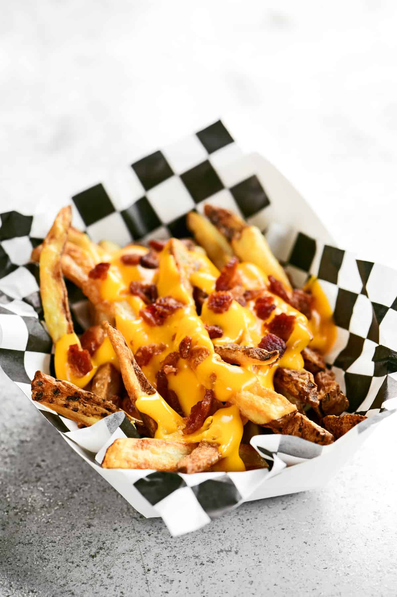

Loaded Cheese Fries

Description
A big pile of crispy french fries smothered in melty cheese and bacon and topped with green onion and your fave toppings!
Ingredients
- French fries
- Bacon
- Cheese
- Other Toppings
- Ground beef, browned sausage, or taco meat.
- Brown gravy.
- Diced tomatoes, sliced jalapenos, avocado, burger sauce, or even a big scoop of leftover chili.
- Sour cream or homemade ranch for dipping.
Steps
- Cook Fries: Air fry, deep fry, or bake french fries in a single layer per the recipe below until they're extra crisp.
- Broil Cheese & Bacon: Sprinkle shredded cheese and cooked bacon over the crispy fries and broil under high heat until melted and bubbly.
- Add Fresh Toppings: Add any fresh toppings (like diced tomatoes or sliced green onions) and a drizzle of sour cream or dipping sauce.